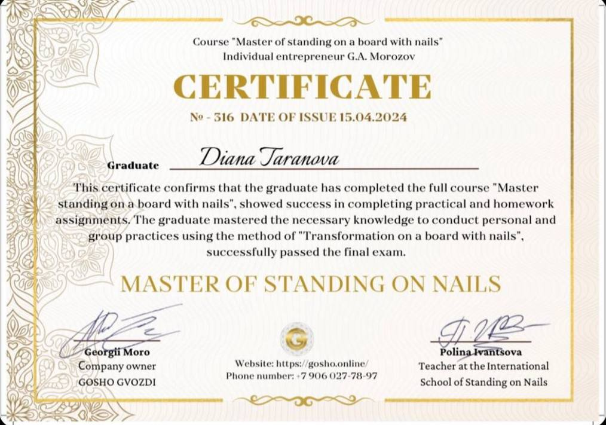
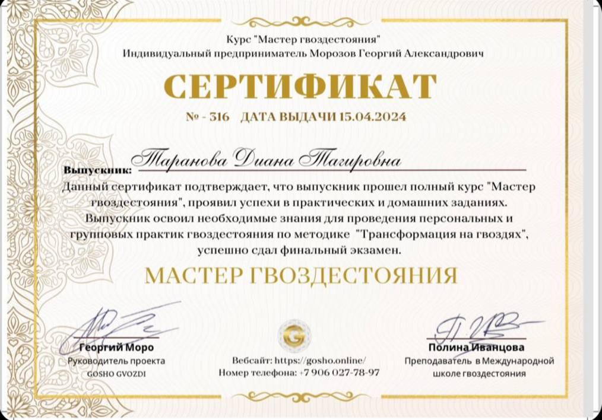
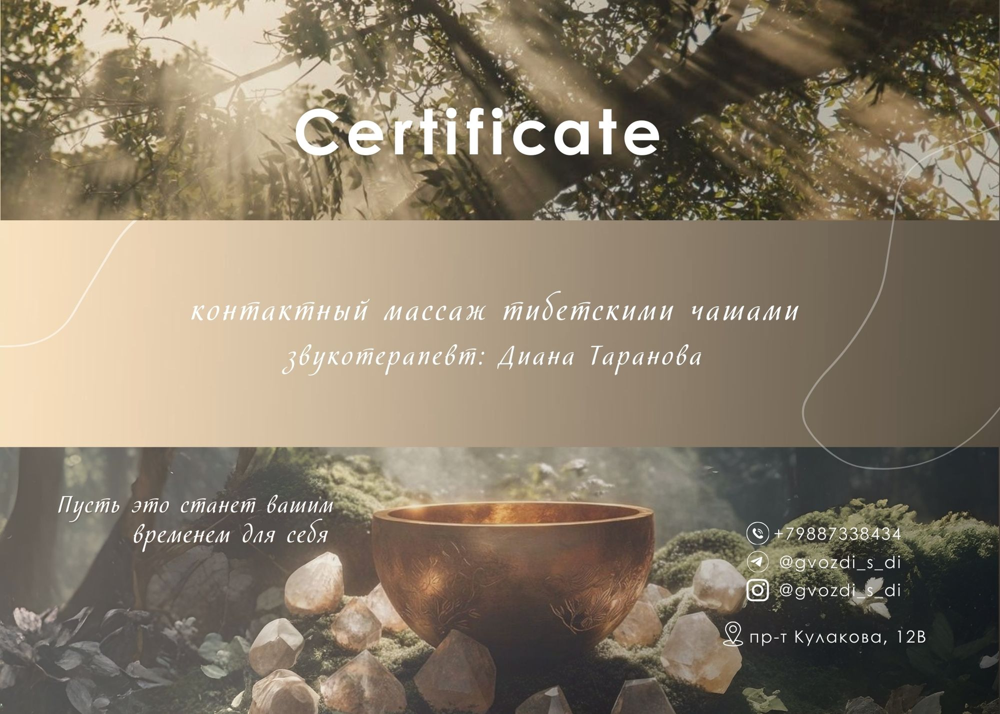
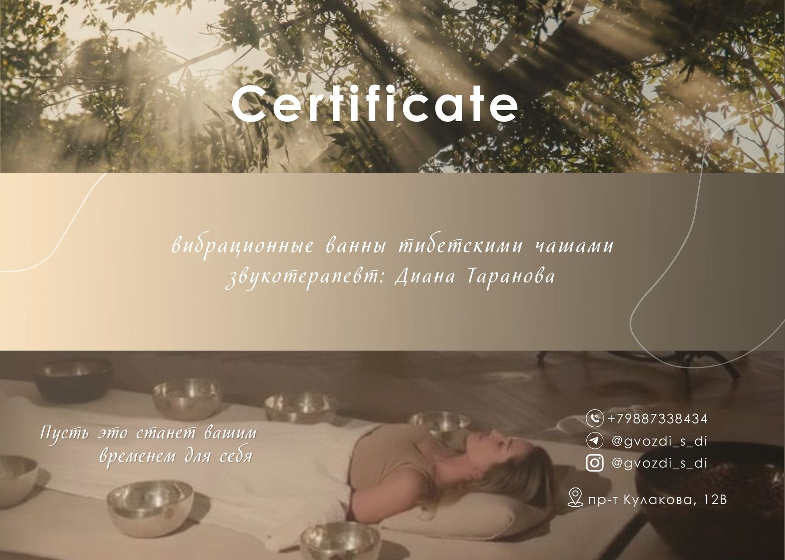
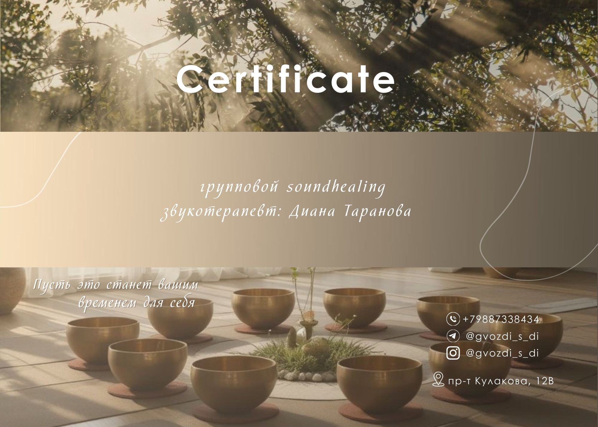
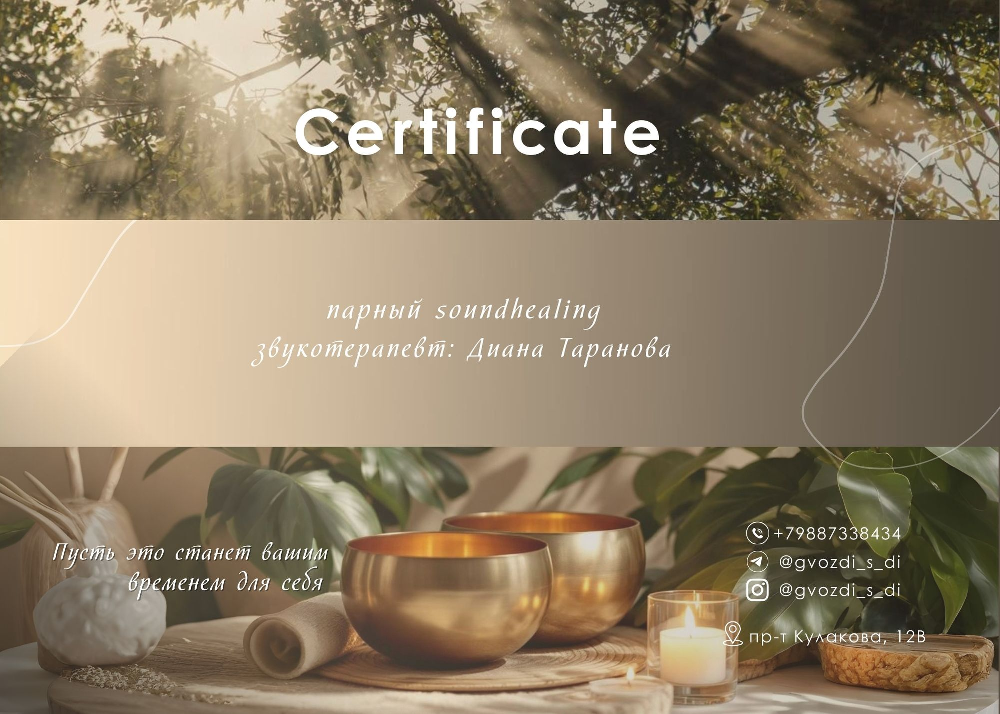
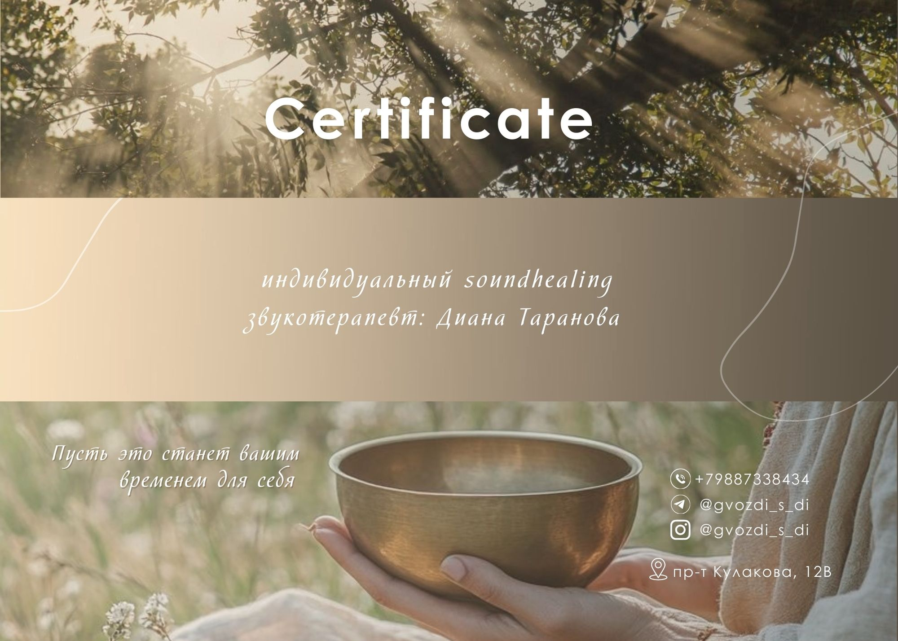
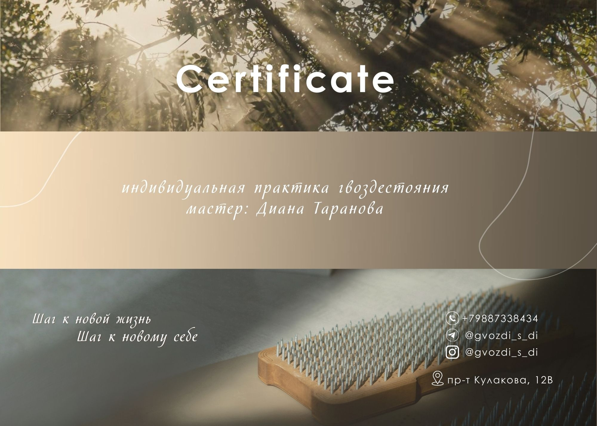
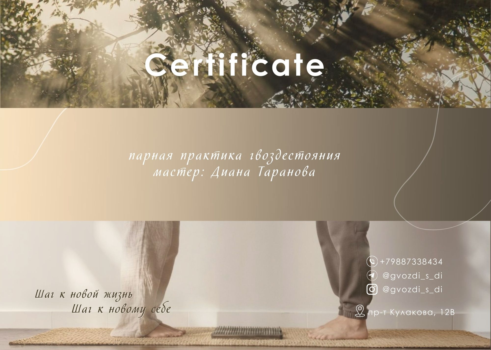
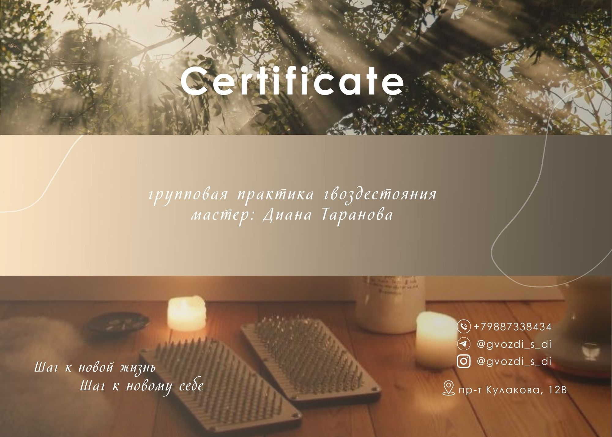

Я — сертифицированный мастер гвоздестояния, выпускница международной школы по методу «Трансформация на гвоздях». Эта практика помогает обрести внутреннюю устойчивость, ресурсное состояние и счастливую жизнь.
Также я — сертифицированный звукотерапевт, закончила международную школу поющих чаш и гонгов. Звуковые вибрации мягко восстанавливают тело, успокаивают эмоции и возвращают состояние внутреннего баланса.
Я создаю пространство, где вы можете бережно укреплять себя — на всех уровнях.
Меняю жизнь на «до» и « после», здесь ты услышишь истинного себя
GVOZDI_S_DI
Здесь вы сможете услышать себя по-настоящему.
Каждая практика — это нежный и внимательный путь к своему внутреннему миру, к энергии, которую вы иногда забываете замечать.
Моя цель — помочь вам вернуть жизненную силу, спокойствие и гармонию, подарить мягкую заботу о теле и душе, открыть пространство для восстановления и любви к себе.
Это не просто практики — это моменты, когда вы слушаете свое тело, ощущаете свои эмоции, учитесь слышать свои желания и намерения. Здесь можно остановиться, вдохнуть и почувствовать: вы важны, вы достойны заботы, и ваше счастье начинается с вас.
Персональная сессия гвоздестояния. Здесь вы найдете ключ к гармоничной и счастливой жизни, улучшите здоровье и состояние за одну сессию
Индивидуальный тренинг «Трансформация на гвоздях» 10.000₽ — 4 часа
Это персональная работа с мастером, с полным погружением в ваш запрос!
После тренинга вас ждет:
Высвободится мощная энергия, которая приведёт вас к изменениям во многих сферах вашей жизни
Прекратите «на автомате» реагировать на стрессовые ситуации и благодаря этому более осознанно будете совершать выбор
Проработаете травмы и обиды
Попрощаетесь со страхами, негативными установками и комплексами, которые мешали вам реализовывать себя
Почувствуете очищение на физическом, эмоциональном, ментальном, и духовных уровнях
Избавитесь от ограничивающих убеждений, общественного мнения, блоков, страхов, которые не дают почувствовать свободу и реализовать свое предназначение
Обретете смелость, энергию и уверенность в себе, чтобы управлять своей жизнью, и пользоваться той огромной силой, которая уже есть внутри вас
Тренинг рекомендован всем, кто занимается личностным ростом, хочет познать свое подлинное я, и раскрыть внутренние источники энергии и обрести жизнь в которой вы будете счастливы.
Этапы работы:
Коуч-сессия с разбором ваших запросов на изменения в жизни. Исходя из ваших запросов, мы сделаем с вами упражнения и сформируем намерение на дальнейшую работу.
Проведу вам «дорогу жизни» — это дорожка из досок «садху», на которой у Вас запускается организм и идёт проверка, с тем ли намерением вы зашли в практику.
Вы научитесь правильно медитировать. Медитативная практика на расслабление, очищение ума и тонкого тела.
Трансформационная практика гвоздестояния с поддержкой мастера: упражнение для глубокой работы с истинными ресурсами и желаниями, упражнение на отпускание обиды и очищения, упражнение на активацию и любовь к себе, ароматерапия, поющие чаши.
С тренинга вы выйдите в состоянии легкости, изобилия, уверенности, решимости и любви.
Дополнительная информация о пользе гвоздестояния:
Стимуляция кровообращения: Давление на стопы улучшает кровоснабжение тканей и органов, усиливая их питание и ускоряя процессы восстановления.
Улучшение состояния позвоночника: Стояние на доске садху способствует вытяжению и выравниванию позвоночника, снимает утомляемость спины и улучшает осанку.
Рефлекторное воздействие: Стимуляция большого количества рефлекторных точек на стопах положительно влияет на работу внутренних органов и улучшает обменные процессы.
Снятие стресса и напряжения: Гвоздестояние помогает отвлечься от тревожных мыслей, снизить уровень кортизола (гормона стресса) и обрести внутреннее равновесие.
Развитие выносливости: Практика учит преодолевать дискомфорт и концентрироваться, развивая силу воли.
Эйфория и улучшение настроения: Выработка эндорфинов во время стояния на гвоздях может вызвать чувство эйфории, расслабления и удовольствия.
Глубокое расслабление и медитация: Это состояние сравнивают с глубокой медитацией, которая помогает успокоить ум.
Повышение осознанности: Гвозди не дают возможности думать о прошлом или будущем, помогая сосредоточиться на настоящем моменте.
Персональная сессия гвоздестояния для пар. Улучшение своего состояния и отношений с помощью практики гвоздестояния с использованием дополнительных техник и упражнений
Парный тренинг «Трансформация на гвоздях» 12000₽ | 4-5 часов
Для тех, кто хочет улучшить отношения и выйти на новый уровень проявления своих чувств, доверия и поддержки. Незабываемый опыт для вашей пары. Но кроме работы со своим партнером вы и самостоятельно прокачаетесь, работая со своим запросом.
Этапы работы:
Коуч-сессия с разбором ваших запросов на изменения в жизни. Исходя из ваших запросов, мы сделаем с вами упражнения и сформируем намерение на дальнейшую работу. Разбор вашей ситуации в паре с помощью психологической техники.
Прохождение дорожки из досок «Садху» - этап для сближения пары, проявления чувственности, пробуждения новых эмоций + проработка намерения с которым зашли в практику.
Медитативная практика - на этом этапе пара учиться сонастраиваться, расслабляться и очищать сознание.
Трансформационная практика гвоздестояния лицом друг к другу с поддержкой мастера: упражнение на отпускание обиды и очищения, наполнение энергией, наполнению любовью к себе и к друг другу, аромомасла для пробуждения новых эмоций, создание особенного настроения и оздоровление организма поющие чаши с невероятными вибрациями. Упражнения и дыхательные практики из тантры, помогут Вам почувствовать, что вы единое целое, и пробудить сексуальную энергию.
С тренинга вы выйдите в состоянии легкости, изобилия, уверенности, решимости и любви❤️
Дополнительная информация о пользе гвоздестояния:
Стимуляция кровообращения: Давление на стопы улучшает кровоснабжение тканей и органов, усиливая их питание и ускоряя процессы восстановления.
Улучшение состояния позвоночника: Стояние на доске садху способствует вытяжению и выравниванию позвоночника, снимает утомляемость спины и улучшает осанку.
Рефлекторное воздействие: Стимуляция большого количества рефлекторных точек на стопах положительно влияет на работу внутренних органов и улучшает обменные процессы.
Снятие стресса и напряжения: Гвоздестояние помогает отвлечьться от тревожных мыслей, снизить уровень кортизола (гормона стресса) и обрести внутреннее равновесие.
Развитие выносливости: Практика учит преодолевать дискомфорт и концентрироваться, развивая силу воли.
Эйфория и улучшение настроения: Выработка эндорфинов во время стояния на гвоздях может вызвать чувство эйфории, расслабления и удовольствия.
Глубокое расслабление и медитация: Это состояние сравнивают с глубокой медитацией, которая помогает успокоить ум.
Повышение осознанности: Гвозди не дают возможности думать о прошлом или будущем, помогая сосредоточиться на настоящем моменте.
Групповая сессия гвоздестояния. Вас ждет перезагрузка, восстановление и укрепления внутреннего состояния.
Групповая практика «Трансформация на гвоздях» 3500 р | 2 часа
Групповая практика подходит для тех, кто хочет испытать гвоздестояние в поддерживающей атмосфере коллективной энергии.
Особенности групповой практики:
Коллективная энергия усиливает эффект практики
Возможность обмена опытом с другими участниками
Экономически более доступный формат
Поддержка группы помогает преодолеть психологические барьеры
Польза тренинга :
Укрепление физической стойкости и выносливости
Психологическое очищение и стрессоустойчивость
Чувство удовлетворения и достижения
Укрепление уверенности в своих силах
Развитие концентрации и внимательности
Гармонизация тела и духа
Энергетическая зарядка и внутренний баланс
Проработка травм и обид
Этапы работы :
Формирование намерения
Дорожка из досок «садху» с поддержкой группы.
Медитативная практика на расслабление, очищение ума и тонкого тела.
Практика гвоздестояния с техниками от мастера.
С тренинга вы выйдите в состоянии легкости, изобилия, уверенности, решимости и любви.
Дополнительная информация о пользе гвоздестояния:
Стимуляция кровообращения: Давление на стопы улучшает кровоснабжение тканей и органов, усиливая их питание и ускоряя процессы восстановления.
Улучшение состояния позвоночника: Стояние на доске садху способствует вытяжению и выравниванию позвоночника, снимает утомляемость спины и улучшает осанку.
Рефлекторное воздействие: Стимуляция большого количества рефлекторных точек на стопах положительно влияет на работу внутренних органов и улучшает обменные процессы.
Снятие стресса и напряжения: Гвоздестояние помогает отвлечься от тревожных мыслей, снизить уровень кортизола (гормона стресса) и обрести внутреннее равновесие.
Развитие выносливости: Практика учит преодолевать дискомфорт и концентрироваться, развивая силу воли.
Эйфория и улучшение настроения: Выработка эндорфинов во время стояния на гвоздях может вызвать чувство эйфории, расслабления и удовольствия.
Глубокое расслабление и медитация: Это состояние сравнивают с глубокой медитацией, которая помогает успокоить ум.
Повышение осознанности: Гвозди не дают возможности думать о прошлом или будущем, помогая сосредоточиться на настоящем моменте.
3 500 ₽ | 1 час
Контактный массаж поющей чашей — это техника, которая сочетает в себе элементы массажа и терапевтического воздействия звуковых волн.
Когда стоит воспользоваться услугой:
Если вы чувствуете хроническое напряжение в теле или стрессе.
Если хотите улучшить свою концентрацию и эмоциональное состояние.
Если ищете способ улучшить качество сна и повысить уровень энергии.
Для глубокой релаксации и восстановления.
Преимущества услуги:
Снятие стресса и напряжения.
Улучшение циркуляции крови и лимфы.
Повышение гибкости и расслабление мышц.
Балансировка энергетических потоков в теле.
Улучшение настроения и эмоционального состояния.
Помощь в восстановлении после физических нагрузок.
Подходит для людей, испытывающих хроническую усталость или стресс.
Как это работает?
Применение чаши: Поющая чаша помещается на тело клиента в различных точках. После того как чаша начинает резонировать, звуковые волны передаются в ткани тела, что вызывает определенную вибрацию, которая действует на мышцы, связки и энергетические центры.
Вибрации и звуки: Поющие чаши создают определенные частоты и звуки, которые могут расслаблять нервную систему, улучшать кровообращение, а также способствовать выведению токсинов и стрессов. Эти вибрации проникают в ткани, нормализуют обмен веществ и помогают восстановить энергетический баланс в организме.
Психоэмоциональный эффект: Звуки и вибрации поющих чашей могут вызывать состояние медитации и внутренней гармонии, снижают уровень стресса, помогают глубже понять и восстановить внутреннюю энергию.
Контактный массаж с поющей чашей идеально подходит для людей, ищущих более мягкие, но эффективные методы работы с телом и энергией, а также тех, кто хочет попробовать что-то новое в области релаксации и оздоровления.
3 500 ₽ | 1 час
Чаши размещаются вокруг тела по меридианам, создавая вибрационное поле.
Индивидуальный: 15 000 ₽ | 1 час
Парный: 10 000 ₽ | 1 час
Групповой: 1 500 ₽ | 1 час
Выездной: 20 000 ₽ | 1 час
Мой путь

Диплом мастера гвоздестояния

Диплом звукотерапевта
Сертификат международной школы
Моё путешествие в мир Гвоздестояния и звукотерапии началось с
внутреннего поиска гармонии и глубокой связи с телом и энергией.
С годами обучения и практики я получила как российские, так и международные
сертификаты — по работе с гвоздями и тибетскими вибрационными чашами —
которые стали отражением моего профессионального мастерства и духовного
посвящения.
Каждый сертификат — это не просто документ, а ступенька на пути
понимания, как звук и энергия могут гармонизировать тело,
ум и душу. Приглашаю вас открыть карусель ниже, чтобы увидеть
подтверждение моей квалификации и пройти этот путь вместе со мной.
Подарочные сертификаты

Сертификат 1

Сертификат 2

Сертификат 3

Сертификат 4

Сертификат 5

Сертификат 6

Сертификат 7

Сертификат 8
Подарите близкому человеку шанс услышать себя, почувствовать заботу и сделать первый шаг к новому состоянию — к новой жизни, к внутренней силе и гармонии.
Наши подарочные сертификаты — это больше, чем подарок. Это приглашение на практику, которая помогает восстановить силы, открыть сердце и почувствовать радость жизни.
Можно выбрать бумажный или электронный вариант — так, чтобы подарок стал личным, значимым и красивым.
Пусть этот подарок станет заботой о любимом человеке, который нуждается в моменте отдыха, тишины и внутренней гармонии.